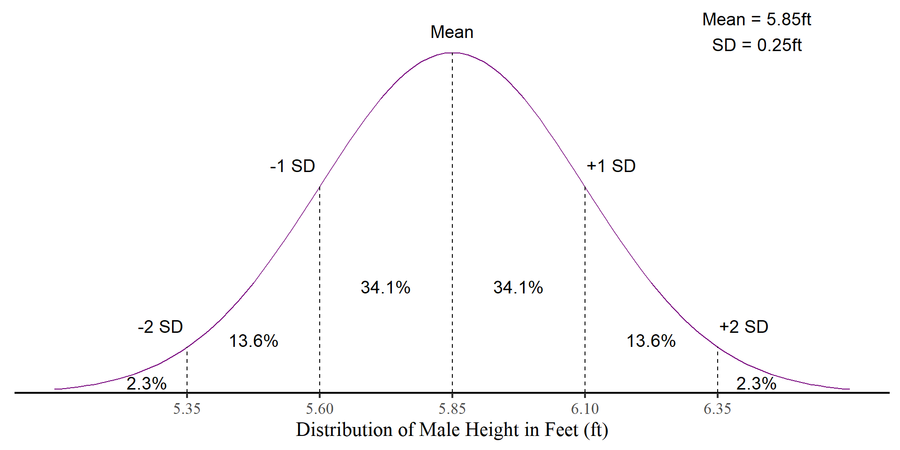

Introduction to p-values
“Population” in Statistics
The example of male height on the last slide is one of the few instances where we can get close to something called a statistical population.
Population: the entire group of individuals, objects, or items of interest for a statistical study.
In any case relevant to Psychology, we cannot measure every person in the population (e.g., every person in the US, every person with schizophrenia,…), so we resort to sampling from the population.
We will call the process of taking a single sample from the population an experiment.


P-values
Now we can put together two things that we know:
- We know that the sampling distribution of the mean (and many other things actually) will be a normal distribution with mean = \(\bar{X}\), the sample mean, and standard deviation = \(\frac{S}{\sqrt{N}}\), the standard error
- Given a normal distribution, we know the probability of any value showing up (e.g., a value that is 2 SD above the mean is very unlikely)
We can now check the probability of seeing our specific sample statistic, or something more extreme, from a sampling distribution! This probibilty is called a p-value
Historical note: The popularizartion of p-values is attributed to R. A. Fisher’s book Statistical methods for research workers (Fisher, 1925), who definitely did not suggest to use p-values the way they are used nowadays.